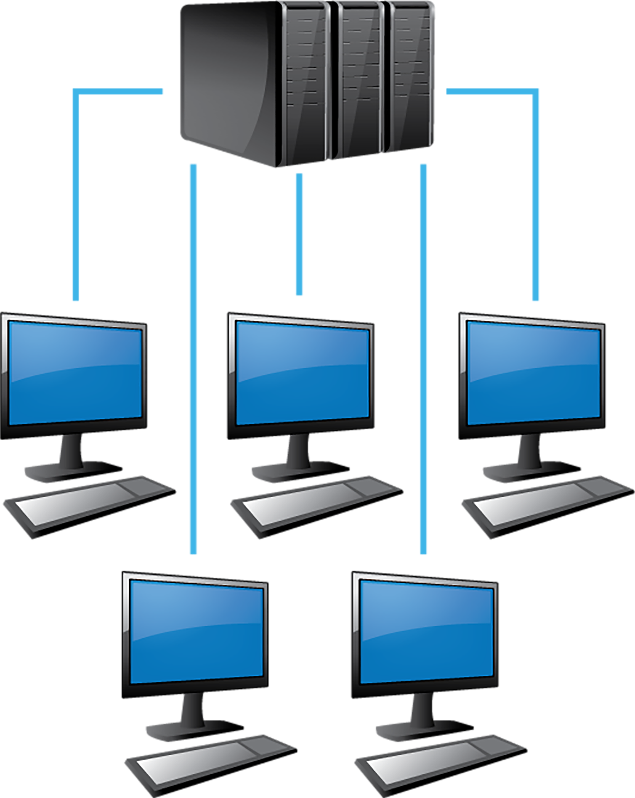
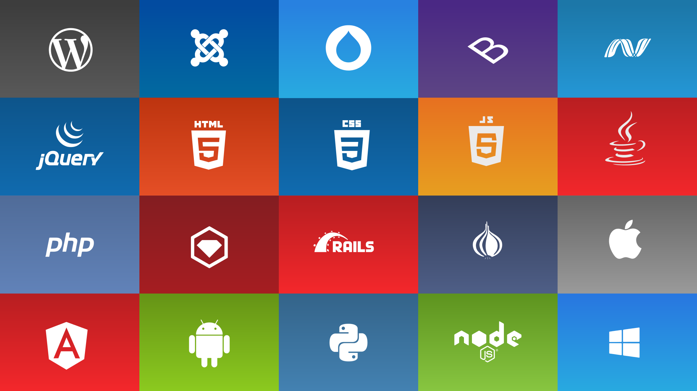

مراحل راه اندازی وبسایت
برای راهاندازی یک وب سایت از لحاظ فنی و اجرایی شما به یک شرکت ارایه دهنده خدمات هاستینگ و دامین نیازمندید. معمولا هر شرکتی چندین نوع خدمات مختلف دارد. اما آنچه برای شما موردنیاز است تا شروع کنید یک وبهاست اشتراکی است. اشتراکی به معنی مشترک شدن وب سایت با دیگری نیست بلکه در منابع یک سیستم است. به این معنی است که بجای آنکه شما یک وب سرور کامل خریداری کنید و هزینه بالایی برای آن پرداخت کنید، شرکت بخشی از یک وب سرور را به شما میدهد.
برای درک بهتر یک کامپیوتر وب سرور را در نظر بگیرید با چند CPU چند هستهای، رم 128 گیگابایتی و چندین هارد دیسک متصل بهم به حجم چندین ترابایت. شرکت موردنظر با استفاده از سخت افزار و نرم افزار مخصوص بخشی از آن را به مشتریهایش اجاره میدهد.
برای مثال شما با خرید پلن شماره ۱ آن شرکت به یک بسته خدماتی متشکل از ۵۰۰ مگابایت فضای هاست (برگرفته از هارد وب سرور)، ۱ گیگابایت رم و ۲ هسته سیپییو دسترسی پیدا میکنید. هریک از این دسترسیها بطور مستقل است و هر کس یک فضای خاص مخصوص به خودش را دارد که به دیگری بستگی ندارد درست مانند کامپیوترهای جدا از هم اما بصورت مجازی.
پس در حقیقت شما در وبهاست اشتراکی در وبسایت یا فضای وبسایت و مشخصات آن با کسی مشترک نیستید بلکه در کل سرور بخشی را از آن خود کردهاید و کلمه اشتراک به مشترک بودن وب سرور و ارایه خدمات آن اشاره دارد.

پس از خرید دامنه و هاست به شما یک یوزر و پسورد جهت ورود به پنل کاربری شما در وب سایت شرکت مورد نظر ارایه خواهد شد. پس از ورود شما میتوانید وارد تنظیمات وب سایت خود شده و فایلهای وبسایت خود را در آنجا آپلود نمایید تا در دسترس قرار گیرند. همچنین قابلیت ساخت پایگاه داده، نوع زبان اسکریپتی و ورژن آن، انواع گزارشها، ساخت ایمیل شخصی خود و بسیاری دیگر از امکانات خواهید بود. شما برای استفاده از این امکانات نیاز به دانش خاصی ندارید و همه آنها توسط کنترل پنلها ارایه میگردد. این کنترل پنلها از همان سایت ارایه دهنده خدمات شما قابل دسترس میباشند و همگی تحت وب هستند یعنی با مرورگر اینترنت خود به آنها دسترسی خواهید داشت.
ثبت دامنه
دامنه شما همان آدرس وبسایت شما خواهد بود پس در انتخاب نام آن دقت کنید. در صورتی که نام قبلا به نام کسی دیگر ثبت شده باشد شما قادر به خرید آن نخواهید بود. برای اینکار شما میتوانید از برنامه whois استفاده نمایید. این برنامهها در تمام وبسایتهای ثبت دامنه موجود میباشند. همچنین وبسایتهای ارایه دهنده whois بسیاری وجود دارند که شما میتوانید ببینید آیا دامنه مورد نظر به نام کسی ثبت گردیده است یا خیر.
بهتر است از هر وبسایتی اقدام به انجام whois نکنید. به هرحال شما نمیخواهید ایدههای نام خود را در هرجایی ذخیره نمایید. اگر از سیستم عامل گنو/لینوکس (یونیکس) استفاده میکنید با نصب برنامه whois در ترمینال خود میتوانید به راحتی به این امکان دسترسی داشته باشید.
وب سایت زیر برای عملیات whois پیشنهاد میگردد.
www.geektools.com
www.geektools.com/whois.php
خرید هاست
شما میتوانید با جستجو در گوگل انواع شرکتهای ارایه دهنده خدمات وب هاستینگ را بیابید. در صورتی که اقدام به خرید هاست میکنید مرحله بالا را با آن همزمان میتوانید انجام دهید. (این کار سادهتر از خرید جدای دامنه است). پس از خرید دامنه شما به هاست شما متصل خواهد شد و قابلیت مدیریت دارد البته معمولا حداکثر ۲۴ ساعت طول خواهد کشید تا در کل دنیا در دسترس قرار گیرد. (این زمان بخاطر مسایل فنی DNS ها و آپدیت آنها در نقاط مختلف دنیا خواهد بود).
پیشنهاد میکنیم تا هاست لینوکس تهیه فرمایید. تهیه وبسایت لینوکسی ربطی به سیستم عامل خودتان ندارد و از هر سیستم عاملی (window, macOS, iOS, Android, linux, …) قابل دسترس است. شما نیز معمولا از راه کنترل پنلها به آن دسترسی دارید.
وب سایت یواستارت در حال حاضر شرکت خاصی را برای ثبت دامنه و خرید هاستینگ خاصی را پیشنهاد نمینماید.
آماده کردن محتوا

هر وبسایتی نیاز به محتوا دارد. با در نظر گرفتن مخاطبین خود و آنچه قرار است ارایه دهید، محتوای خود را آماده کنید. این محتوا میتواند از یک وبلاگ ساده و پستهای شما باشد تا یک وب سایت کامل شرکتهای بزرگ برای ارایه و نمایش خدمات و محصولات خود.
روش ارایه محتوای خود را نیز در نظر بگیرید و همچنین اگر به دنبال وبسایتی برای فروش هستید، روشهای مختلف پرداخت را در ساختار وبسایت خود لحاظ کنید. منظور از ساختار فقط مدل فنی آن نیست بلکه مدل ارتباطی بیشتر مد نظر است.
وبسایتی که محتوا و خط مشی مشخصی دارد راحتتر بین مخاطبین جا خواهد افتاد و همچنین مخاطبین شما ارتباط راحتتری با محتوا برقرار خواهند نمود.
فراموش نکنید که تولید محتوا به خصوص برای برندسازی واجب و نیازمند آموزش است. پس در صورتی که برای برندسازی تلاش دارید بهتر است محتوای خویش را غنی کنید و در زمینه نوشتن به خصوص در زمینه محتوای آنلاین آموزش ببینید.
اما در صورتی که وبسایت خود را برون سپاری میکنی و طراحی آن به طراح متخصص میسپارید، حتما محتوای آن را نیز به یک متخصص در زمینه تولید محتوا بسپارید.
ساخت وبسایت

شما میتوانید ساخت وبسایت خود را بسازید و راه اندازی کنید و یا اینکار را به یک حرفهای و متحصص (فرد/شرکت) بسپارید. در صورتی که گزینه دوم مد نظر شما است نیاز به دانستن چیزخاصی نخواهید داشت و اطلاعات اولیه و ابتدایی در آموزش نخست برای آشنایی شما کافی خواهد بود.
در صورتی که خودتان میخواهید وبسایت کسب و کار و یا شخصی خودتان را راه اندازی کنید ادامه آموزشها برای شما مفید خواهد بود. فراموش نکنید که تقریبا تمام وبسایتها نیازمند بهروزرسانی (آپدیت) هستند. این آپدیت هم از لحاظ محتوا خواهد بود و هم از لحاظ فنی (ارتقا نسخههای فایلها و امنیت بیشتر سایت و …).
چند نکته مفید برای ساختن وبسایتان:
به مخاطب خود فکر کنید و آنچه آنها نیاز به خواندن/دیدن/گوش دادن و … دارند. فقط روی چیزی که خودتان میخواهید ارایه دهید تمرکز نکنید.
درصورتی که وبسایت شما شخصی نیست (مانند وبلاگ) و برای کسب و کارتان آن را میسازید حتما با یک حرفهای و متخصص مشورت نمایید.
امروزه شما باید به فکر طراحی وبسایتی باشید که در گوشیهای هوشمند، تبلتها، دسکتاپ و انواع گجتها قابل خواندن باشد. (responsive design)
وب سایت شخصی خود را به روزرسانی کنید و مطالب و محتوای آن را افزایش دهید.
به وضعیت رتبه خود در موتورهای جستجو اهمیت دهید و تلاش کنید در بالای جستجوی کلمات کلیدی مربوط به سایت خودتان قرار بگیرید. (SEO)
وب سایت خود را بازاریابی کنید (هم شخصی و هم کسب و کار)، برای مثال آدرس آن را روی کارت ویزیت خود بنویسید.
راهاندازی وبسایت
در صورتی که وبسایت شما ایستا است (از صفحات استاتیک تشکیل شده است). کافی است تا تمام فایلها را روی فولدر public هاست خود آپلود نمایید. وب سایت شما پس از آن در دسترس خواهد بود. پیشنهاد یواستارت این است تا از SSGها استفاده نمایید. (Static webSite Generator)

اگر وبسایت شما پویا است (مثل یک وبلاگ)، بهتر است تا از برنامههای CMS استفاده نمایید و از نوشتن وبسایت خود از پایه صرفه نظر کنید. اینکار نه تنها در وقت شما صرفه جویی میکند بلکه امنیت شما را بالا برده (با آپدیت اتوماتیک ساختار وبسایت و امنیتی آن) و امکانات بسیار زیادی را مانند انواع پوستهها (themes) افزونهها (plugins) مانند افزونه پرداخت بانکی و … ارایه میکند.